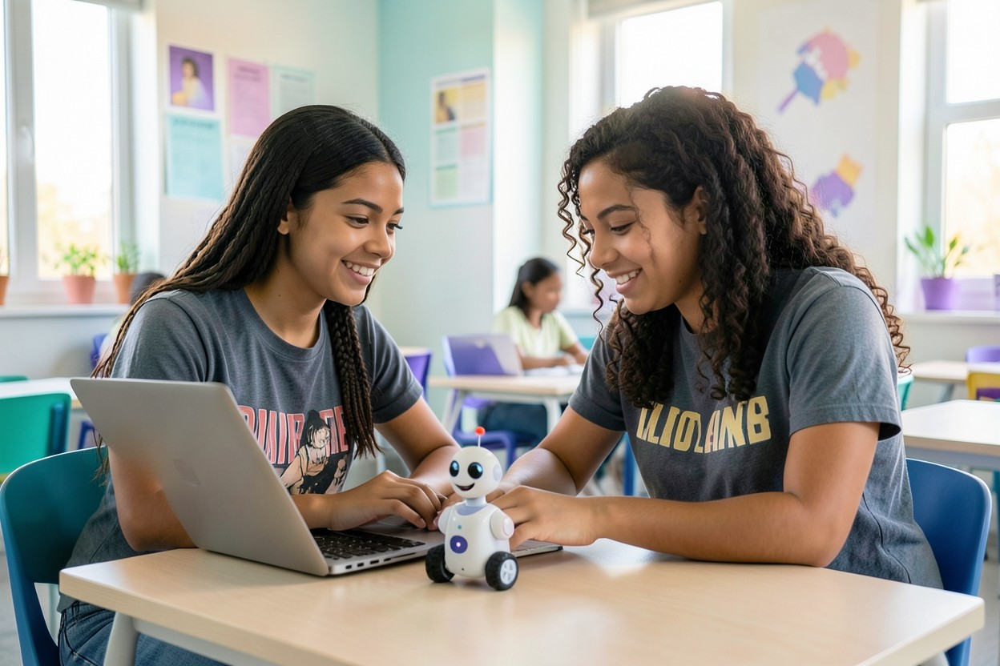

La tecnología no es solo una colección de aparatos: también reúne conocimientos, decisiones, herramientas y personas. Este recorrido presenta sus ideas principales con ejemplos de la vida diaria, preguntas y conexiones entre disciplinas.
Una tecnología es un método, objeto o sistema que las personas diseñan para responder a una necesidad. Puede ser tan sencilla como una palanca o tan compleja como una red de satélites. La idea central no es el aparato, sino el problema que ayuda a resolver y las consecuencias de usarlo.
Un computador combina componentes físicos (hardware), instrucciones (software) y datos. Internet conecta redes de computadores para que puedan intercambiar información. Cuando usamos una aplicación, enviamos una instrucción a un sistema que procesa datos y devuelve una respuesta en una pantalla.
Por eso, detrás de una videollamada hay cámaras, micrófonos, programas que codifican el sonido y redes que transportan pequeños fragmentos de información. Entender esas piezas ayuda a usar la tecnología con más autonomía y a detectar cuándo algo no funciona como esperamos.
Piensa en esto
Elige un objeto que utilizas cada día. ¿Qué necesidad resuelve? ¿Qué personas y conocimientos fueron necesarios para crearlo?
TECNOLOGÍA ES DISEÑO, CONOCIMIENTO Y COLABORACIÓN
02 / MIRAR HACIA ATRÁS
La tecnología cambia con las necesidades.
Cada avance abre oportunidades nuevas y también preguntas sobre quién puede acceder a él, cómo se usa y qué efectos produce.
ANTES
Herramientas para vivir y construir
La rueda, los molinos, la imprenta y los sistemas de navegación multiplicaron la fuerza, el conocimiento y la capacidad de compartir información. La imprenta, por ejemplo, permitió reproducir textos en muchas copias.
SIGLOS XIX–XX
Electricidad, teléfono y computación
La electricidad permitió iluminar ciudades y alimentar máquinas. El teléfono llevó la voz a distancia y los primeros computadores electrónicos procesaron cálculos que antes requerían mucho tiempo.
1980–2000
Computadores personales e Internet
Los computadores se hicieron más accesibles y la web conectó documentos de distintas partes del mundo. El correo electrónico y los buscadores transformaron la comunicación y la investigación cotidiana.
2000–HOY
Móviles, nube y sistemas inteligentes
Los teléfonos reunieron cámara, mapas, mensajería y acceso a redes. Los servicios en la nube facilitan colaborar a distancia; la IA analiza y produce información a partir de modelos entrenados con datos.
PRÓXIMOS PASOS
Más conexión, mejores preguntas
La robótica colaborativa, la realidad extendida y los avances en energía y computación amplían lo posible. Su valor dependerá también de la seguridad, la accesibilidad y las reglas que las personas establezcan.
DATO
La historia de la tecnología no es una fila de inventos aislados: una idea suele apoyarse en materiales, conocimientos y redes que otras generaciones desarrollaron antes.
03 / INTELIGENCIA ARTIFICIAL
¿Qué es la IA y cómo funciona?
Un campo de la informática que crea sistemas capaces de realizar tareas como reconocer patrones, clasificar información, recomendar opciones o generar contenido.
La inteligencia artificial (IA) es un conjunto de métodos y programas que permiten que un computador produzca resultados útiles a partir de datos. La palabra “inteligencia” puede llevar a imaginar una mente humana, pero los modelos actuales no tienen experiencia, deseos ni conciencia: calculan patrones aprendidos y siguen objetivos definidos por personas.
Un sistema que detecta correo no deseado clasifica mensajes según ejemplos. Un modelo de lenguaje calcula qué palabras pueden seguir a las anteriores. Un sistema de visión compara rasgos de una imagen con patrones aprendidos. Distintas tareas requieren técnicas y evaluaciones diferentes; no existe una única IA que haga todo.
DISTINCIÓN
La IA generativa propone texto, imagen, audio o código nuevos. Un sistema de recomendación normalmente ordena opciones que ya existen. Ambos pueden usar aprendizaje automático, pero no hacen la misma tarea.
MODELOS, DATOS Y DECISIONES HUMANAS
De los datos a una respuesta: cuatro pasos
01
Se define la tarea
El equipo decide qué problema resolver: detectar un objeto, ordenar resultados o generar un borrador. Una meta clara permite evaluar si el sistema realmente ayuda.
02
Se preparan ejemplos
El modelo aprende relaciones de un conjunto de datos. Si los ejemplos son incompletos, poco diversos o incorrectos, el sistema puede reproducir esas limitaciones.
03
Se calcula una salida
Al recibir una consulta nueva, el programa compara patrones y produce una predicción o respuesta. El resultado es una estimación, no una garantía de verdad.
04
Se comprueba y mejora
Personas prueban casos, miden errores y corrigen el sistema. En tareas importantes, la revisión humana y la posibilidad de pedir una explicación son esenciales.
Aprender con ejemplos
En aprendizaje automático, un modelo ajusta sus parámetros para hacer mejor una tarea con datos de práctica. Puede reconocer patrones en ejemplos que no vio antes, aunque su desempeño cambia si el contexto real es distinto.
Por ejemplo, un modelo entrenado con fotografías claras puede fallar con poca luz. Evaluarlo con casos variados y cercanos al uso real ayuda a entender sus límites.
La instrucción también importa
En una herramienta generativa, una instrucción clara indica el propósito, la audiencia y el formato deseado. Pedir “explica la fotosíntesis a una estudiante de secundaria con un ejemplo sencillo” suele dar un punto de partida más útil que una pregunta ambigua.
Un buen resultado no elimina la verificación: revisa fechas, fuentes y afirmaciones importantes antes de compartirlo o utilizarlo en una tarea.
Pregunta de reflexión
¿Qué datos necesitarías para entrenar un sistema que reconociera plantas? ¿Cómo comprobarías que funciona también con distintas edades, cámaras y condiciones de luz?
04 / IA EN LA VIDA COTIDIANA
Ya convives con sistemas inteligentes.
Muchas veces la IA funciona detrás de una aplicación conocida. Estos ejemplos ayudan a distinguir lo que hace el sistema de lo que decidimos las personas.
01 · COMUNICACIÓN
Teclado y traducción
El teclado propone palabras y corrige errores probables; una aplicación puede traducir una frase. Los modismos y el contexto cambian el sentido, así que una traducción automática merece revisión.
Prueba práctica
Compara una frase traducida literalmente con la forma en que la diría una persona hablante del idioma.
02 · CONTENIDO
Recomendaciones
Una plataforma puede ordenar música o videos a partir de lo que una persona reproduce y de patrones de uso. Esa selección no es neutral: influye en lo que vemos después.
Pregunta
¿Cómo cambiarían tus recomendaciones si también buscaras temas diferentes a los habituales?
03 · IMÁGENES
Cámara y accesibilidad
Algunos sistemas describen escenas, identifican texto en una foto o ayudan a enfocar. Pueden apoyar a personas con discapacidad visual, pero deben respetar la privacidad de quien aparece en las imágenes.
Recuerda
Una imagen puede contener información privada incluso cuando no vemos una contraseña.
04 · MAPAS
Rutas y tráfico
Las aplicaciones combinan mapas y datos de tránsito para sugerir recorridos. Una ruta rápida cambia si hay obras, transporte público, cierres o condiciones locales no representadas.
Decisión humana
Considera la seguridad, el acceso y las condiciones reales antes de seguir una recomendación.
UNA PANTALLA MUESTRA RESULTADOS; LOS SISTEMAS TRABAJAN CON DATOS DETRÁS DE ELLA
05 / APRENDER CON IA
La tecnología puede acompañar el aprendizaje, no reemplazarlo.
En el aula y en casa, una herramienta digital puede ofrecer explicaciones en distintos formatos, ejercicios de práctica o maneras de presentar ideas. La relación más provechosa es activa: quien aprende pregunta, intenta, compara y explica con sus propias palabras.
Una aplicación educativa puede adaptar la dificultad de los ejercicios según las respuestas. Un lector de texto puede ayudar a seguir una lectura. Un asistente generativo puede proponer preguntas de repaso, pero no conoce todo el contexto de la clase ni el objetivo de una tarea.
↗
Investigar con criterio Contrasta una respuesta con el libro, la clase y otras fuentes reconocidas. Identifica quién publica y cuándo.
◉
Practicar paso a paso Pide una pista, intenta resolver el ejercicio y después compara el procedimiento, no solo el resultado.
✳
Crear en equipo Usa presentaciones, documentos o pizarras compartidas para ordenar las ideas y repartir tareas.
◎
Aprender con accesibilidad Subtítulos, lectura en voz alta, ampliación y dictado pueden facilitar el acceso a materiales de distintas maneras.

APRENDER JUNTOSIDEAS EN ACCIÓN
EJEMPLO GUIADO
Una sesión de estudio responsable en cuatro momentos
Escribe con tus palabras qué parte del tema quieres entender.
Pide una explicación o pista, sin compartir datos personales.
Revisa la explicación con apuntes y fuentes confiables.
Resuelve un ejercicio nuevo sin copiar y anota qué aprendiste.
06 / TECNOLOGÍAS ACTUALES
Un ecosistema de ideas que se conectan.
Estas tecnologías pueden combinarse en un mismo proyecto. Abre las fichas para ver ejemplos rápidos; después explora cada tema con más detalle.
✳
Un sensor del Internet de las cosas recoge información, un programa puede analizarla y un actuador robótico puede responder. El sistema necesita energía, conectividad, seguridad y una persona que lo supervise.
01 / CIENCIA
Medicina e investigación
La IA puede ayudar a revisar imágenes y datos. El personal especialista interpreta hallazgos y toma decisiones clínicas.
02 / AMBIENTE
Ciudades y naturaleza
Los sensores permiten medir aire, agua y energía. La calidad de las decisiones depende también de políticas y participación local.
03 / COLABORACIÓN
Trabajo y comunicación
La nube facilita compartir proyectos; los equipos necesitan acuerdos claros de permisos, autoría y privacidad.
PROTOTIPAR, PROGRAMAR, PROBAR
06.1 / ROBÓTICA
Robots que perciben y actúan.
La robótica combina mecánica, electrónica y programación para crear máquinas que realizan movimientos. Un robot suele tener una estructura física, sensores para recibir señales, actuadores que producen movimiento y un programa que indica cómo responder.
Un robot educativo puede seguir una línea en el piso. Primero, un sensor detecta el contraste; luego, el programa compara la señal y ajusta las ruedas. En una fábrica, un brazo robótico puede repetir un movimiento con precisión. En agricultura, una máquina puede medir humedad o ayudar a reconocer frutos maduros.
Los robots no son necesariamente autónomos: muchos ejecutan instrucciones específicas y necesitan supervisión. Diseñar para el trabajo conjunto requiere límites de velocidad, botones de parada y pruebas en condiciones controladas.
CURIOSIDAD
La palabra “robot” se popularizó a comienzos del siglo XX en una obra teatral. Hoy describe máquinas muy distintas, desde juguetes programables hasta vehículos exploradores.
Desafío de diseño
Imagina un robot que ayude a separar residuos. ¿Qué podría detectar con sus sensores? ¿Qué decisión debería quedar siempre bajo supervisión humana?
En pocas palabras: un robot detecta una condición, procesa una instrucción y actúa; sus sensores y reglas determinan qué puede hacer.
06.2 / INTERNET DE LAS COSAS
Objetos que intercambian datos.
El Internet de las cosas (IoT) conecta objetos cotidianos —como sensores, relojes, cámaras o termostatos— a una red. Un dispositivo registra una condición, envía datos y puede recibir instrucciones de una aplicación o servicio.
En una casa, un sensor de temperatura puede regular la calefacción. En un huerto escolar, un sensor de humedad puede indicar cuándo regar. En una ciudad, estaciones distribuidas registran tráfico o calidad del aire. La lectura depende de la ubicación, calibración y mantenimiento de los sensores.
La conexión amplía la comodidad, pero también multiplica los puntos que hay que proteger. Cambiar las contraseñas predeterminadas, instalar actualizaciones y limitar permisos reduce riesgos. Antes de conectar un aparato, vale la pena preguntarse qué datos recoge, cuánto tiempo los guarda y quién puede consultarlos.
Sensor
Mide luz, sonido, movimiento, temperatura u otra señal.
→
Red
Transporta el dato hacia una aplicación o servicio.
→
Acción
Una alerta o actuador responde según una regla.
En pocas palabras: el IoT conecta objetos para que un dato del mundo físico pueda informar una decisión o activar una acción.
DATOS DEL MUNDO FÍSICO, CONEXIONES DIGITALES
UNA SIMULACIÓN PARA EXPLORAR Y COMPRENDER
06.3 / REALIDAD VIRTUAL Y AUMENTADA
Del entorno real a mundos interactivos.
La realidad virtual (RV) muestra un entorno digital que ocupa gran parte del campo visual. Con un visor o pantalla, el usuario puede mirar alrededor e interactuar con objetos simulados. La realidad aumentada (RA), en cambio, añade capas digitales a lo que muestra una cámara del entorno físico.
En clase, una simulación de RV puede ayudar a recorrer un volcán o explorar la anatomía sin desplazarse. Una aplicación de RA puede superponer el nombre de las constelaciones al cielo o colocar un modelo tridimensional sobre una mesa. Son representaciones: no sustituyen una experiencia real ni son automáticamente exactas.
RV · INMERSIÓN
El entorno principal es digital; a menudo se usa un visor.
Ejemplo: visita virtual a un museo.RA · CAPAS
El mundo real permanece visible y recibe elementos digitales.
Ejemplo: modelo 3D del sistema solar sobre una mesa.
Para usarlas con comodidad, conviene descansar la vista, contar con espacio despejado y elegir actividades apropiadas para la edad. Las escuelas también deben considerar el costo, la accesibilidad y el posible mareo en algunas personas.
En pocas palabras: RV crea un espacio digital; RA enriquece con información digital la vista del espacio real.
06.4 / PROGRAMACIÓN
Dar instrucciones y aprender a resolver.
Programar significa expresar una solución mediante instrucciones que un computador puede ejecutar. Un programa combina datos, decisiones y repeticiones. Un algoritmo es una secuencia ordenada de pasos para resolver un problema, incluso antes de escribir código.
Por ejemplo, para decidir si una planta necesita agua: medir la humedad; compararla con un límite; si el suelo está seco, avisar. La misma lógica puede escribirse en un lenguaje de programación o representarse con bloques para principiantes.
Los errores son parte del proceso. Depurar consiste en encontrar por qué el resultado no coincide con lo esperado, probar una hipótesis y corregirla. La programación desarrolla creatividad y pensamiento paso a paso, pero un programa solo hace lo que sus instrucciones y datos permiten.
IDEA DEL ALGORITMO
leer humedad
aislada ← humedad < límite
si aislada: mostrar “regar”
si no: mostrar “todo bien”
Un programa real necesita además un sensor y una regla para medir.
Pregunta
¿Qué pasos escribirías para que una página cambie de color cuando alguien pulse un botón?
EL CÓDIGO TRADUCE UNA IDEA A INSTRUCCIONES
PROTEGER TAMBIÉN ES UN HÁBITO
06.5 / CIBERSEGURIDAD
Cuida tus cuentas, equipos e información.
La ciberseguridad protege dispositivos, redes y datos frente a usos no autorizados, fallas y engaños. Ningún sistema es perfecto, por eso es útil combinar herramientas con hábitos sencillos y pedir ayuda cuando algo parece sospechoso.
Usa contraseñas largas y diferentes para servicios distintos; un administrador de contraseñas puede ayudarte a recordarlas. Activa la verificación en dos pasos cuando esté disponible. Mantén actualizado el sistema operativo y descarga aplicaciones de fuentes confiables.
Los mensajes de suplantación suelen imitar una empresa o persona y generar urgencia para que abras un enlace o entregues una clave. Detente, revisa con cuidado el remitente y entra a la web oficial por tu cuenta. No compartas códigos de acceso ni publiques información que pueda identificarte.
DETENTE
¿El mensaje exige actuar ahora o amenaza con cerrar tu cuenta?
COMPRUEBA
Verifica el enlace y confirma por un canal oficial conocido.
PROTEGE
No compartas claves, códigos ni datos personales.
En pocas palabras: combina prevención, actualizaciones y verificación; si una situación te incomoda, busca ayuda de una persona adulta de confianza.
06.6 / DISPOSITIVOS INTELIGENTES
Cuando un aparato responde al contexto.
Un dispositivo inteligente suele combinar sensores, software y conectividad. Un reloj puede contar pasos; un parlante puede responder a una orden de voz; una televisión puede usar aplicaciones en línea. “Inteligente” no significa que comprenda como una persona: describe funciones automatizadas.
Antes de usar uno, revisa los permisos de micrófono, ubicación, cámara y contactos. Comprueba si puedes desactivar la recolección que no necesitas y cómo borrar datos. Si un dispositivo registra salud o ubicación, trata esa información con especial cuidado.
Los aparatos también consumen energía y necesitan mantenimiento. Reparar, compartir o extender su vida útil puede reducir costos y residuos electrónicos. Consulta cómo reciclarlos de manera segura cuando ya no puedan usarse.
COMPARA
Un reloj inteligente puede estimar tu movimiento con sensores; un cuaderno de actividad registra lo que escribes. Uno automatiza la medición, el otro depende de observación. Ninguno explica por sí solo toda tu salud.
En pocas palabras: revisa las funciones, los permisos, el consumo y los datos que guarda cada dispositivo.
HARDWARE + SENSORES + SOFTWARE
07 / MIRADA EQUILIBRADA
Ventajas, riesgos y decisiones conscientes.
La tecnología no es buena o mala por sí sola. Sus resultados dependen de cómo se diseña, quién la usa, con qué datos y qué opciones tienen las personas afectadas.
OPORTUNIDADES
Acceso y creatividad
Recursos de lectura, subtítulos y traducción pueden ampliar el acceso a información. Las herramientas de creación facilitan prototipar, comunicar ideas y colaborar a distancia.
La automatización puede asumir tareas repetitivas y liberar tiempo para análisis, cuidado y creatividad, siempre que las personas reciban formación y participen en los cambios.
DESAFÍOS
Errores, sesgos y privacidad
Un modelo puede equivocarse o reflejar desigualdades presentes en sus datos. Las plataformas pueden reunir más información de la necesaria, y un contenido falso puede parecer convincente.
Un uso prolongado también afecta descanso y concentración. Pausas, límites razonables y conversaciones fuera de la pantalla ayudan a mantener equilibrio.
BUENAS PRÁCTICAS
Una guía para decidir
Pregunta qué necesidad resuelve, quién se beneficia, qué podría salir mal y qué datos solicita. Verifica la información importante, pide consentimiento antes de publicar imágenes de otras personas y busca alternativas accesibles.
Si una decisión afecta la salud, la seguridad o los derechos de alguien, no delegues toda la responsabilidad en un sistema automático.
Automatización e IA: ¿son lo mismo?
Pregunta
Automatización tradicional
Sistema con IA
Cómo funciona
Sigue reglas definidas paso a paso.
Usa un modelo que encuentra patrones en datos.
Ejemplo
Una alarma suena a una hora programada.
Un filtro clasifica mensajes según señales aprendidas.
Si cambia el contexto
Puede requerir que una persona ajuste la regla.
Puede fallar si el nuevo caso es distinto de sus ejemplos.
Supervisión
Se revisa que la regla y el resultado sean adecuados.
Se revisan datos, errores, sesgos y consecuencias.
EL FUTURO TAMBIÉN SE DISEÑA
08 / LO QUE VIENE
Tecnologías que podrían transformar el futuro.
La computación cuántica investiga formas distintas de procesar ciertos problemas; todavía no es un sustituto general de los computadores actuales. La energía renovable, las baterías y las redes inteligentes pueden apoyar sistemas más eficientes, si se diseñan para reducir consumo y residuos.
En medicina y ciencia, modelos especializados pueden ayudar a revisar imágenes o buscar patrones, con validación de profesionales. En ciudades, sensores pueden hacer visibles problemas de movilidad o contaminación, siempre con salvaguardas para la privacidad y decisiones públicas transparentes.
También veremos herramientas más accesibles para crear y aprender. El reto no será solo inventar algo nuevo, sino decidir qué problemas merecen atención, quién puede usar la solución y cómo se mide si realmente mejora la vida de las personas.
Tres preguntas para cualquier innovación¿A quién ayuda?¿Qué datos necesita?¿Cómo sabremos si funciona?
Una herramienta digital es un programa, plataforma o servicio que usa dispositivos electrónicos para crear, organizar, comunicar o analizar información. Aquí conocerás varias, verás cómo construir una experiencia web y podrás practicar mediante preguntas y juegos.
Una herramienta digital puede ser un editor de texto, un buscador, una aplicación de diseño, una plataforma educativa o un formulario. Cada una organiza información y ofrece acciones para que las personas alcancen un objetivo.
Antes de elegir una, define qué necesitas hacer y quién la usará. Una herramienta simple y clara suele ser mejor que un sistema complejo con funciones que no se necesitan. Considera el costo, la privacidad, la accesibilidad, la conexión disponible y si se puede exportar el trabajo.
En un proyecto escolar, por ejemplo, el equipo podría investigar con un buscador, redactar en un documento compartido, comparar datos en una hoja de cálculo, preparar una presentación y finalmente recoger comentarios con una encuesta.
Elige con intención
¿Qué función necesitas hoy: escribir, calcular, comunicar, investigar o diseñar? Nombra una herramienta que ya uses y una función que te gustaría aprender.
HERRAMIENTAS PARA CREAR Y COMPARTIR
02 / ESTUDIAR, ORGANIZAR, CREAR
Un kit de herramientas para aprender.
Compara opciones por el trabajo que facilitan. Las funciones concretas cambian entre servicios, así que revisa siempre sus instrucciones y opciones de privacidad.
01 / ESCRITURA
Procesadores de texto
Sirven para escribir, revisar y dar formato a informes. Los comentarios y el historial de cambios ayudan a trabajar en equipo y reconocer aportes.
Úsalos para: preparar un borrador, estructurar títulos y revisar ortografía. Exporta una copia cuando sea importante conservar el archivo.
02 / PRESENTAR
Diapositivas y diseño
Una presentación ordena una explicación en una secuencia visual. Una diapositiva clara comunica una idea principal con texto breve, imagen pertinente y buen contraste.
Úsalas para: explicar un proceso con esquemas y ejemplos. Añade texto alternativo a imágenes y evita leer párrafos completos en pantalla.
03 / ANALIZAR
Hojas de cálculo
Las hojas organizan datos en filas y columnas; fórmulas calculan totales y gráficos ayudan a observar tendencias. La precisión depende de que las unidades y datos estén bien registrados.
Úsalas para: comparar el consumo mensual de agua de un grupo. Revisa fórmulas y protege la información de las personas.
04 / PRACTICAR
Plataformas educativas
Pueden reunir lecturas, actividades, entregas y conversaciones de una clase. Algunas permiten practicar a distinto ritmo y guardar el progreso.
Úsalas para: revisar instrucciones y entregar un trabajo. Comprueba fechas, criterios y quién puede ver tus publicaciones.
05 / ENCONTRAR
Buscadores y fuentes
Un buscador localiza páginas relacionadas con palabras clave, no garantiza que todas sean exactas. Los primeros resultados pueden incluir anuncios o páginas con intereses comerciales.
Úsalos para: combinar términos precisos, consultar autoría y fecha y contrastar las afirmaciones con más de una fuente reconocida.
06 / IDEAR
Herramientas de IA
Pueden ayudar a resumir un texto, generar ideas, traducir o revisar código. Sus respuestas son sugerencias calculadas, no una fuente primaria ni una certificación de exactitud.
Úsalas para: pedir una explicación alternativa o preguntas de práctica. No pegues datos personales y revisa los resultados antes de compartirlos.
EJEMPLO PRÁCTICO · PROYECTO DE CLASE
Investiga
Busca dos fuentes fiables.
→Organiza
Resume los hallazgos en una tabla.
→Comunica
Explica resultados con imágenes propias.
→Reflexiona
Verifica y cita las fuentes.
03 / CONECTAR Y COMPARTIR
Comunicación digital con respeto.
Mensajería, correo, videollamadas y documentos colaborativos permiten conversar y crear a distancia. Antes de enviar un mensaje, piensa en la audiencia, el tono y la información que incluyes. Un texto breve puede parecer brusco si no se lee el contexto.
En un equipo, acuerden dónde guardar archivos, cómo nombrarlos, quién puede editarlos y cuándo responder. Verifica permisos antes de compartir un enlace. En una videollamada, evita mostrar datos privados en el fondo y pide permiso antes de grabar o difundir imágenes.
La experiencia empieza con un propósito claro. El diseño ordena contenido, ofrece caminos comprensibles y comunica qué ocurre después de cada acción.
CONTENIDO + DISEÑO + FUNCIONES + PRUEBAS
01
Definir el propósito
¿Qué quiere aprender o resolver la persona visitante? Un objetivo acotado evita funciones y opciones innecesarias.
02
Ordenar el contenido
Organiza títulos, secciones y enlaces para que el visitante pueda orientarse. Los encabezados describen lo que sigue.
03
Diseñar interacciones
Un botón debe indicar su acción; un formulario explica qué campo falta; una pregunta muestra progreso y feedback.
04
Probar con personas
Comprueba enlaces, lectura con teclado, contraste y pantallas pequeñas. Una función no está lista hasta que se prueba.
Botón
Ejecuta una acción y comunica qué hará: “Ver resultado”.
Formulario
Solicita información mínima y explica cómo se valida.
Cuestionario
Ofrece opciones, progreso, corrección y una explicación.
Encuesta
Recoge impresiones con claridad sobre el destino de los datos.
DISEÑO INCLUSIVO
Los enlaces deben tener texto descriptivo; los campos necesitan etiquetas visibles; las acciones principales deben poder realizarse con teclado y con pantalla táctil.
COMPARAR Y ELEGIR
La herramienta adecuada depende de la tarea.
No existe una aplicación ideal para todas las personas. Compara el propósito, la colaboración, los datos y las condiciones de acceso antes de empezar.
Necesidad
Herramienta útil
Precaución
Escribir en equipo
Documento compartido
Configurar bien los permisos.
Comprender datos
Hoja de cálculo
Verificar fórmulas y unidades.
Investigar
Buscador y fuentes confiables
No confundir posición con calidad.
Generar ideas
Asistente de IA
Revisar hechos y proteger datos.
Recibir opiniones
Formulario o encuesta
Explicar almacenamiento y uso.
05 / ACTIVIDADES INTERACTIVAS
Aprende al participar.
Responde un cuestionario y prueba dos juegos con varias rondas. Cada actividad muestra el avance, corrige con explicaciones y termina con un resultado.
Preguntas sobre los dos apartados: tecnología, inteligencia artificial, herramientas digitales y participación web.
10preguntas
●respuestas explicadas
PREGUNTA 01 / 10PUNTOS 0
06 / DOS JUEGOS · CUATRO RONDAS CADA UNO
Elige un reto y juega para aprender.
Lee cada situación, elige una respuesta y usa la explicación para descubrir por qué funciona. Los puntos recompensan respuestas correctas; los errores no bloquean el juego.
Cuatro retos de lógica digital, IA, sensores y seguridad. Observa la imagen, lee las pistas y elige la mejor explicación.
4 rondas con pistas visuales.
Recibes una explicación si fallas.
Ganas un punto al acertar cada reto.
RONDA 1 / 4PUNTOS 0
JUEGO 02
HERRAMIENTAS DIGITALES Y WEB
Reto: diseña una buena experiencia
Cuatro situaciones de navegación, formularios, accesibilidad y privacidad. Piensa como quien crea una página para otras personas.
4 rondas basadas en decisiones reales.
Feedback que explica cada respuesta.
Puntuación y resumen final.
RONDA 1 / 4PUNTOS 0
07 / OPINIONES Y MEJORAS
Tu experiencia también enseña.
Valora el diseño, la información, las imágenes, la navegación y las actividades. Después puedes dejar una sugerencia o recomendar un tema. Los campos obligatorios están marcados por el navegador.
Sobre tus respuestas
Si hay una sesión iniciada y el servicio de la página está disponible, la opinión se envía para revisión. Si no, se guarda solo en este dispositivo. No se muestran respuestas ni estadísticas inventadas. No escribas datos personales.